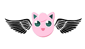
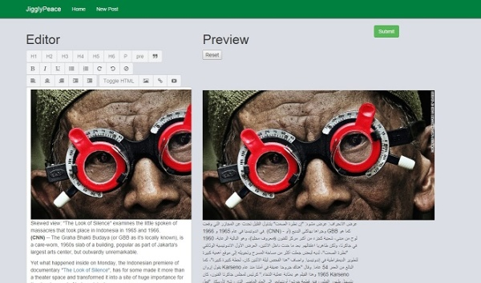
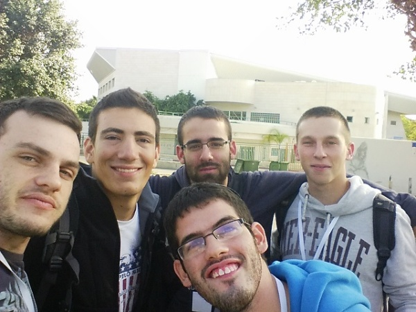

My First Hackathon

Last week I participated in my first hackthon. The hackthon took place in Tel Aviv and targeted young technological minded people. Each project had to follow three Criteria's:
- The project addresses a real social need
- The project is not a one-off and is capable of surviving
- The project does not end with the presentation, make a demo
Our Idea
Most of the teams choose to focus on helping people in need (blind, handicapped, etc..), we chose to take a different approach to helping society. As we see it, one of the main bottlenecks of todays society is communication, not to mention that today each newspaper has a politician behind it. Even tough the giant world from a few decades ago has turned to a "global village" after the establishment of the World Wide Web, people are still blind to anything that is not written or spoken in their motherers language. By removing the language barrier, we hope that people will get to know other people from different places and cultures.
Project JigglyPeace
Our website is made out of discussions, each discussion starts with a post and is followed by comments and each viewer sees the site in his language. To make our site more attractive then translating a newspaper site we have done 3 things. - all news in one central website - while composing a post/comment, there is a preview of your text after it has been translated to another language and then back to his language. - quick article import from external sites. The picture below demonstrates how easy it is to open a new discussion.

The Team

My Favorites
25 teams competed in this hackthon. My favorite projects were:
Almost Kosher
Almost kosher helps you find a place to eat while letting you control the business values you care about. For example, you can filter on accessible to handicaps
Blind-Sight android app
Blind-Sight has set a goal to help blind people get from one place to another. The app runs in the background, once it detects that the phone holder is headed in the wrong direction it buzzes. the buzzing stops when he is back on track. When arriving at a road intersection, the holder can take his phone out and point it to the traffic light. When the light turns green it will give the holder a sign so he knows he can pass
Things I learned
A big team can be nice but most of the time there isn't enough work for all. Take into account that the more people in the team, the more talking overhead you will have. We used c# for our server-side. Writing c# code may be good for big project but is very frustrating for fast and dirty things. Most of the time me and my team were trying to get our server up and running while getting strange errors. We tried using azure for our web deployment, it was very unpleasant and in the end didn't help us (we used a locally hosted server). Next time i will probably try writing with python or golang instead.